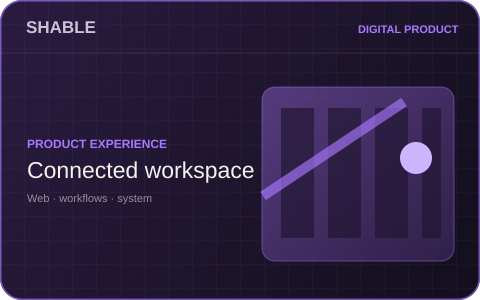

Design a mobile store from the ground up, with clear navigation, essential shopping features, and a consistent visual identity.
Designing a smoother fashion shopping experience
I designed a mobile fashion shopping app, working on catalog navigation, product discovery, and product details. I also developed a consistent visual style across the key shopping screens.



Designing a fashion shopping app from scratch
Shable started as a new mobile shopping app for a fashion retailer. I worked on its core shopping experience, from browsing collections to exploring individual products.
My role
I designed Shable’s mobile interface from scratch, defining the navigation and creating catalog, product list, and product detail screens. I also worked on key interactions such as favorites and size selection, and developed the app’s visual style through typography, colors, and reusable UI elements.
Inside the shopping experience
Tap a work area to explore its section.
Helping shoppers find their way through the catalog
I designed Shable’s navigation from scratch, defining the screen hierarchy and how users move from the home page into different shopping sections.
Category-Based Navigation
I organized the catalog around Men, Women, and Brands, giving shoppers clear starting points based on what they want to explore.
Design decision
I separated the app’s main navigation from catalog browsing. The bottom navigation provides access to key sections, while category cards guide shoppers toward relevant products. This keeps the home screen focused on discovery without overwhelming it with options.
From browsing to saved favorites
I designed product lists with a clear hierarchy of images, prices, and key details, making it easier to scan different items and explore the ones worth a closer look.
Save Before Deciding
I connected product browsing with favorites, allowing shoppers to save interesting items and return to them later without interrupting their search.
01Plan
Define the project and its working view.
02Automate
Connect states, owners, and recurring actions.
03Align
Keep progress and decisions visible to everyone.
Helping shoppers make informed choices
I designed product pages that bring together images, pricing, available sizes and colors, descriptions, and customer ratings, giving shoppers the information they need to evaluate an item.
Product Options in One Place
I kept size and color selection alongside essential product details, allowing shoppers to explore different options without leaving the page.
Building Shable’s visual identity from scratch
I defined the app’s visual direction, selecting a pastel color palette, typography, and rounded interface elements to create a recognizable style while keeping products at the center of attention.
A distinctive color palette
I chose soft blue and lavender tones to give Shable its own character without competing with product photography.
Personality meets readability
I combined Montserrat Alternates, Comfortaa, and Overpass, assigning each a clear role in the interface hierarchy.
Consistency across screens
I applied shared colors, typography, and UI patterns across the app to maintain a coherent shopping experience.
From scratch to a complete mobile shopping experience
I designed Shable from the ground up, covering product search, selection, favorites, and cart interactions. Beyond the main screens, I also designed loading, empty, error, and selection states to account for different user situations and keep the experience consistent.
- Mobile screens designed
- 40
- Reusable UI components
- ~50
- Key shopping flows designed
- 04+